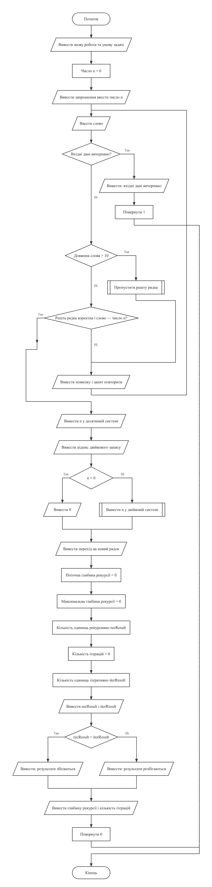
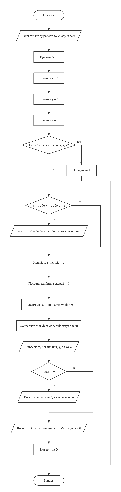
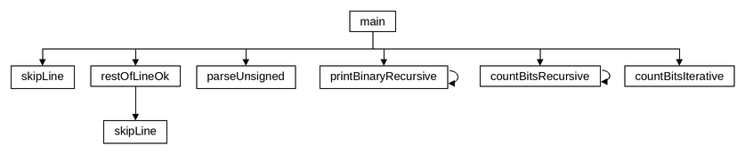
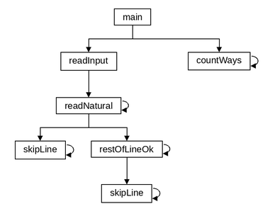
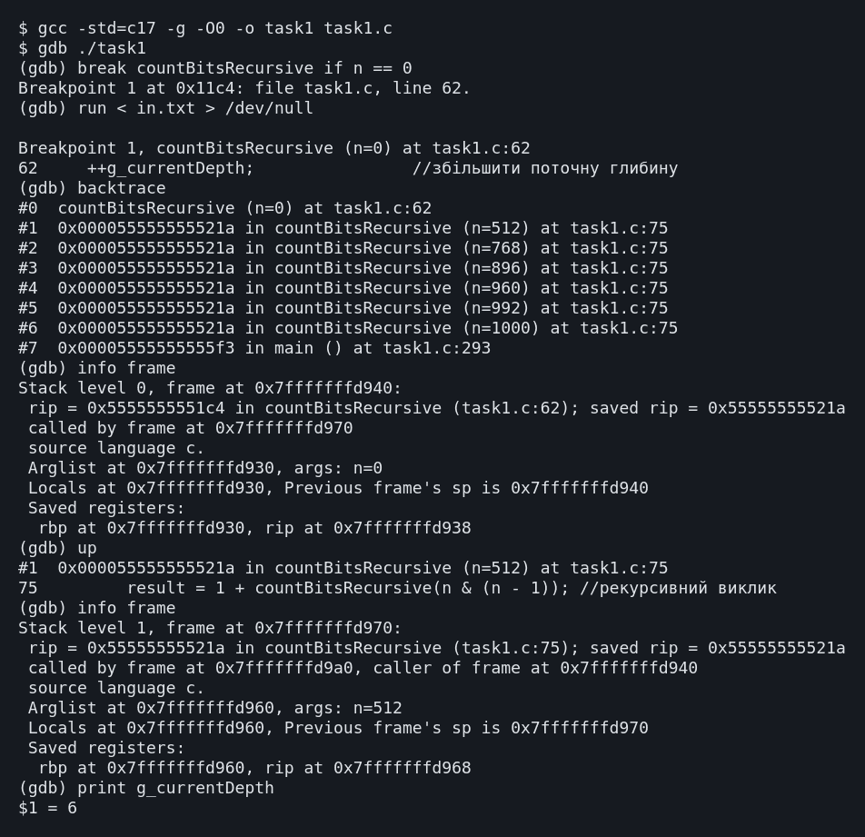

LAB5(19)Основи програмуванняLAB5(19)
Лабораторна робота №5
Рекурсивні функції
Варіант 19. Виконав: Одарчук Олексій, КНУ імені Тараса Шевченка, Факультет інформаційних технологій, Кафедра програмних систем і технологій, група ІПЗ-11. C17, gcc
- 2 завдання
- C
- 8 розділів
01Мета роботи#
- Вивчити особливості рекурсивних процесів.
- Опанувати технологію рекурсивних обчислень.
- Навчитися розробляти алгоритми та програми із застосуванням рекурсивних функцій.
02Умова задачі#
Завдання 1#
Увести ціле число n в десятковій системі числення з клавіатури. Перевести його у двійкову систему. Знайти кількість одиниць у двійковому представленні числа n, використовуючи рекурентне означення функції f(n), де символ & означує операцію побітового логічного множення (таблиця 5.1, варіант 19):
| 0, якщо n = 0
f(n) = |
| 1 + f(n & (n - 1)), якщо n ≠ 0
Реалізувати рекурсивний та ітеративний варіанти розв'язку, порівняти ефективність, визначивши глибину рекурсії та кількість ітерацій циклу.
Завдання 2#
Потрібно сплатити поштове відправлення, вартість котрого складає m копійок, а в наявності тільки поштові марки номіналом x, y, z копійок. Скількома різними способами можна сплатити поштове відправлення? Розробити рекурсивну функцію для обчислення кількості зображень числа m у вигляді суми фіксованих чисел, використавши рекурентне співвідношення для чисел Фібоначчі (таблиця 5.2, варіант 19).
| 1, n = 0
f(n) = | 1, n = 1
| f(n-1) + f(n-2), n > 2
Обмеження умови (шапка таблиці 5.2): у завданнях цієї таблиці не можна використовувати цикли, масиви й рядки; використання рекурсії обов'язкове.
03Аналіз задачі та теоретичне обґрунтування#
Завдання 1. Означення f(n) = 1 + f(n & (n-1))#
Віднімання одиниці інвертує наймолодший одиничний біт числа та всі нулі праворуч від
нього, тому n & (n - 1) гасить рівно цей біт, а старші лишає без змін.
Наприклад:
n = 1011100₂
n - 1 = 1011011₂
───────────────── &
1011000₂ <- погашено рівно один (наймолодший) одиничний біт
Кожен рекурсивний виклик прибирає одну одиницю, тож глибина рекурсії дорівнює кількості
одиниць плюс один завершальний виклик із n = 0 (алгоритм Кернігана).
Рекурсія лінійна: кожен виклик робить не більше одного вкладеного, тому кількість
викликів завжди дорівнює глибині й окремо не підраховується.
Умова завершення рекурсії: n = 0. Вона завжди досяжна, бо кожен
виклик зменшує кількість одиничних бітів.
Тип числа. В умові сказано "ціле число", але програма приймає значення від 0 до
4294967295 і зберігає їх у типі unsigned int. Результат побітових операцій
над від'ємним числом залежить від його подання в пам'яті (у доповняльному коді, 32 біти,
число -1 містить 32 одиниці), а вираз n - 1 при n = INT_MIN -
переповнення знакового типу, тобто невизначена поведінка. Для беззнакового типу
арифметика визначена за модулем 2^32, і рекурентне означення працює для будь-якого
значення. Число читається як рядок і перетворюється функцією
parseUnsigned(): кожна цифра додається лише після перевірки, що результат
не перевищить UINT_MAX. Тому для контролю діапазону не потрібен тип, ширший
за unsigned int, а від'ємне чи завелике число відхиляється з повторним
запитом.
Двійковий запис також виводиться рекурсивно: виклик для старшої частини числа стоїть
перед виведенням розряду n % 2, тож розряди друкуються у правильному
порядку без масиву.
Завдання 2. Побудова рекурентного співвідношення#
Будь-який спосіб оплати починається з наклеювання однієї марки - котроїсь із трьох. Після цього лишається сплатити суму, меншу на її номінал. Звідси:
w(m) = w(m - x) + w(m - y) + w(m - z) w(0) = 1 сума набрана точно - це один завершений спосіб w(m) = 0 при m < 0: перевитрата, спосіб не існує
Співвідношення має будову співвідношення Фібоначчі з умови, а при x = 1,
y = 2 і недоступному третьому номіналі збігається з ним точно; це
використано як контрольний тест у розділі 7.
В означенні з умови третій рядок записано для n > 2, тож значення f(2)
формально не визначене. Тут прийнято стандартне означення чисел Фібоначчі, у якому
рекурентний перехід діє вже з n = 2: f(2) = f(1) + f(0) = 2. Саме за такого
прочитання вироджений випадок дає F₁₁ = 89.
Різні способи. Питання "скількома способами" має два прочитання. Перше -
композиції: порядок доданків важливий, 1+2 і 2+1 - два різних способи (послідовність
наклеювання марок). Саме композиції рахує співвідношення
w(m) = w(m - x) + w(m - y) + w(m - z), а для марок номіналом 1 і 2 воно дає
числа Фібоначчі, на які посилається умова, тому програма обчислює композиції. Друге -
розбиття: порядок неважливий, 1+2 і 2+1 - один спосіб. Для контрольного набору m = 6,
марки 1, 2, 3 композицій 24, а розбиттів 7: 3+3, 3+2+1, 3+1+1+1, 2+2+2, 2+2+1+1,
2+1+1+1+1, 1+1+1+1+1+1. Для m = 10, марки 1, 2, 5 композицій 128, розбиттів 10. Розбиття
рахуються іншим співвідношенням, p(m, k) = p(m, k - 1) + p(m - d_k, k), де d_k - k-й
номінал; воно теж рекурсивне і не потребує масивів, але з числами Фібоначчі не
пов'язане.
Однакові номінали. Повторні номінали враховуються один раз, інакше той самий спосіб було б підраховано двічі.
Трудомісткість. Рекурсія без запам'ятовування обчислює ті самі значення багаторазово, тому кількість викликів зростає експоненційно. Запам'ятовування потребує масиву, а масиви умова забороняє. Найгірший випадок - номінали 1, 2, 3:
| m (номінали 1, 2, 3) | Викликів | Час |
|---|---|---|
| 20 | 433 993 | 0,007 с |
| 25 | 9 135 460 | 0,04 с |
| 30 | 192 299 281 | 0,6 с |
| 35 | 4 047 854 365 | 8 с |
| 36 і більше | - | не приймається на введенні |
Кожні п'ять копійок збільшують кількість викликів приблизно в 20 разів. Тому вартість
відправлення обмежено 35 копійками: за цієї межі і кількість способів, і лічильник
викликів гарантовано вміщуються в unsigned int (найбільше значення 4 294
967 295), а більшу суму така рекурсія однаково не обчислила б за прийнятний час.
Програма використовує стільки пам'яті, скільки потрібно: тип, ширший за
unsigned int, для цих величин не знадобився. Номінали марок обмежено тим
самим діапазоном 1..35: марку, дорожчу за найбільшу вартість відправлення, однаково не
можна наклеїти.
Заборона циклів поширюється на весь файл завдання 2, тому рекурсивними зроблено й
допоміжні функції введення: skipLine() викликає себе для кожного зайвого
символа, restOfLineOk() - для кожного пропуску, а
readNatural()
повторює запит рекурсивним викликом замість циклу.
Вибір типів даних#
| Змінні | Тип | Чому |
|---|---|---|
Завдання 1: n, result у parseUnsigned()
|
unsigned int |
Програма приймає числа до 4294967295 = UINT_MAX, тобто всі 32 біти;
у 16 біт такий діапазон не вміщується, а беззнаковий тип потрібен для визначених
побітових операцій.
|
Завдання 1: g_currentDepth, g_maxDepth,
iterations, recResult, iterResult
|
short |
Кількість одиниць не більша за 32, глибина рекурсії - за 33. |
Завдання 1: digit |
unsigned short |
Значення цифри 0..9. |
Завдання 1: token |
char[12] |
10 цифр найбільшого числа, один символ для виявлення довшого слова і завершальний нуль. |
Завдання 2: m, x, y, z
|
short |
Вартість і номінали 1..35; різниця m - x не менша за -34. |
Завдання 2: g_currentDepth, g_maxDepth |
short |
Глибина не перевищує 36 (марки по 1 копійці при m = 35). |
Завдання 2: ways, g_calls |
unsigned int |
Уже при m = 20 викликів 433 993 і способів 121 415 - більше за 65 535; при m =
35 викликів 4 047 854 365, що ще вміщується в unsigned int.
|
Завдання 2: number у readNatural() |
int |
scanf("%hd") мовчки обрізав би завелике число до 16 біт, і воно
могло б пройти перевірку меж. Тому число читається в int і лише
після перевірки записується в short.
|
Обидва завдання: c, scanned |
short |
Символ або EOF та результат scanf() (1, 0 або
EOF).
|
Дійсних чисел і типу long у програмах немає.
Література: Ковалюк Т.В. Алгоритмізація та програмування. - Львів.: "Магнолія 2006", 2024. - 400 с.; Deitel P., Deitel H. C++ How to Program. Pearson Education, Inc. Hoboken, New Jersey. 2017. - 3015 p.; Thomas H. Cormen, Charles E. Leiserson, Ronald L. Rivest, Clifford Stein Introduction to Algorithms, Third Edition 2009. - 960 p.
04Блок-схема алгоритму#





HIPO-діаграма показує ієрархію викликів функцій так само, як у лекції 5: зверху головна функція main, від неї стрілки ведуть до функцій, які вона викликає, нижче - функції, що викликаються з них; петля біля блока означає рекурсивний виклик. Функцію, яку викликають з кількох місць, розгорнуто лише там, де вона трапляється вперше, а довгі переліки викликів подано стовпчиком, щоб схема вміщувалася на сторінку. Діаграму побудовано за текстом програми.


Схеми побудовано за текстами програм у rombik (rombik.app) відповідно до ДСТУ 19.701-90 (ISO 5807). Структура кожної схеми точно відповідає коду функції, а блоки описують дії словами, як у методичних вказівках, без фрагментів коду.
05Текст програми#
Завдання 1 - task1.c
/*==============================================================================
task1.c. Лабораторна робота №5. Завдання 1. Варіант 19.
Тема: рекурсивні функції.
Умова (таблиця 5.1, варіант 19): увести ціле число n в десятковій системі
числення з клавіатури. Перевести його у двійкову систему. Знайти кількість
одиниць у двійковому представленні числа n, використовуючи рекурентне
означення функції f(n), де символ & означує операцію побітового логічного
множення:
| 0, n = 0
f(n) = |
| 1 + f(n & (n - 1)), n != 0
Реалізувати рекурсивний та ітеративний варіанти розв'язку, порівняти
ефективність, визначивши глибину рекурсії та кількість ітерацій циклу.
Виконав: Одарчук Олексій, КНУ імені Тараса Шевченка, ФІТ, група ІПЗ-11.
Компілятор: gcc -std=c17
==============================================================================*/
#include <stdio.h>
#include <stdbool.h>
#include <ctype.h>
#include <limits.h>
#include <string.h>
/* Глобальні лічильники глибини рекурсії. Рекурсивна функція має
відповідати рекурентному означенню з умови задачі, тому службових
параметрів-лічильників вона не має, а лічильники оголошено глобально.
Кількість викликів окремо не рахується: рекурсія лінійна (кожен виклик
робить не більше одного вкладеного), тому вона дорівнює глибині.
Глибина не перевищує 33 (32 одиничні біти плюс завершальний виклик). */
short g_currentDepth = 0; //поточна глибина вкладеності викликів
short g_maxDepth = 0; //максимальна досягнута глибина рекурсії
//========= countBitsRecursive: кількість одиничних бітів числа за рекурентним =========
/*
countBitsRecursive - кількість одиничних бітів числа за рекурентним
означенням f(n) з умови варіанта.
Ідея операції n & (n - 1): віднімання одиниці інвертує наймолодший
одиничний біт та всі нулі праворуч від нього; побітове множення з вихідним
числом лишає всі старші біти незмінними і гасить саме цей один біт.
Отже кожен виклик прибирає рівно одну одиницю, і глибина рекурсії
дорівнює кількості одиниць плюс завершальний виклик із n = 0.
Це алгоритм Кернігана.
Параметри: n [вхідний] - число, біти якого підраховуються.
Повертає : кількість одиничних бітів числа n (0..32).
Локальні змінні:
result - кількість одиничних бітів.
Умова завершення рекурсії: n = 0 - одиничних бітів не лишилось.
Глибина рекурсії дорівнює кількості одиниць у двійковому записі плюс один
(завершальний виклик з n = 0).
*/
short countBitsRecursive(unsigned int n)
{
++g_currentDepth; //збільшити поточну глибину
if (g_currentDepth > g_maxDepth) //якщо досягнуто нової глибини
{
g_maxDepth = g_currentDepth; //запам'ятати максимальну глибину
}
short result = 0; //кількість одиничних бітів
if (n == 0) //базовий випадок
{
result = 0; //умова завершення рекурсії
}
else
{
result = 1 + countBitsRecursive(n & (n - 1)); //рекурсивний виклик
}
--g_currentDepth; //зменшити поточну глибину
return result; //повернути кількість одиниць
}
//=================== countBitsIterative: те саме обчислення циклом ====================
/*
countBitsIterative - те саме обчислення циклом.
Параметри:
n [вхідний] - число, біти якого підраховуються; у процесі
підрахунку його одиничні біти гасяться;
iterations [вихідний] - адреса лічильника ітерацій циклу (не більше
кількості бітів числа, 32, тому достатньо short).
Повертає: кількість одиничних бітів числа n (0..32).
Локальні змінні:
count - накопичувана кількість одиниць.
*/
short countBitsIterative(unsigned int n, short *iterations)
{
short count = 0; //кількість одиничних бітів
*iterations = 0; //обнулити лічильник ітерацій
while (n != 0) //повторювати, доки є одиниці
{
n &= n - 1; //погасити наймолодший одиничний біт
++count; //збільшити кількість одиниць
++(*iterations); //збільшити лічильник ітерацій
}
return count; //повернути кількість одиниць
}
//============= printBinaryRecursive: вивести двійкове представлення числа =============
/*
printBinaryRecursive - вивести двійкове представлення числа.
Молодший розряд обчислюється першим (n % 2), а виводитись має останнім,
тому рекурсивний виклик для старшої частини числа стоїть перед
виведенням розряду. Масив чи рядок для цього не потрібні.
Параметри: n [вхідний] - число, що виводиться у двійковій системі.
Умова завершення рекурсії: n = 0 - старших розрядів більше немає.
*/
void printBinaryRecursive(unsigned int n)
{
if (n == 0) //базовий випадок
{
return; //завершити без виведення
}
printBinaryRecursive(n >> 1); //рекурсивний виклик
printf("%u", n % 2); //вивести молодший розряд
}
//========= skipLine: відкинути залишок рядка введення разом із символом '\n' ==========
/*
skipLine - відкинути залишок рядка введення разом із символом '\n'.
*/
void skipLine(void)
{
short c = getchar(); //прочитати перший символ (символ або EOF)
while (c != '\n' && c != EOF) //повторювати до кінця рядка
{
c = getchar(); //прочитати наступний символ
}
}
//======= restOfLineOk: перевірити залишок рядка після успішно прочитаного числа =======
/*
restOfLineOk - перевірити залишок рядка після успішно прочитаного числа.
Припустимі лише пропуски до кінця рядка або до наступного числа;
інший символ - помилка, і решта рядка відкидається.
Повертає: true - залишок рядка коректний; false - у рядку є зайві символи.
*/
bool restOfLineOk(void)
{
short c = getchar(); //прочитати перший символ (символ або EOF)
while (c == ' ' || c == '\t' || c == '\r') //пропускати пробільні символи
{
c = getchar(); //прочитати наступний символ
}
if (c == '\n' || c == EOF) //якщо рядок закінчився
{
return true; //повернути ознаку коректного рядка
}
if (isdigit(c) || c == '-' || c == '+') //якщо далі починається число
{
ungetc(c, stdin); //повернути символ у потік
return true; //повернути ознаку коректного рядка
}
skipLine(); //відкинути решту рядка
return false; //повернути ознаку помилки
}
//======= parseUnsigned: перетворити рядок десяткових цифр на число unsigned int =======
/*
parseUnsigned - перетворити рядок десяткових цифр на число unsigned int.
Число читається як рядок, а не через scanf("%u"): scanf приймає знак мінус,
мовчки перетворює від'ємне число на велике додатне і не виявляє
переповнення. Тут кожна цифра додається лише після перевірки, що результат
не перевищить UINT_MAX, тож ширший тип для контролю діапазону не потрібен.
Параметри:
text [вхідний] - рядок, що перевіряється;
value [вихідний] - адреса змінної для числа.
Повертає: true - рядок є числом від 0 до UINT_MAX; false - інакше.
Локальні змінні:
result - накопичуване значення;
digit - значення чергової цифри.
*/
bool parseUnsigned(const char *text, unsigned int *value)
{
if (*text == '+') //якщо є знак плюс
{
++text; //необов'язковий знак плюс
}
if (*text == '\0') //якщо рядок порожній
{
return false; //повернути ознаку помилки
}
unsigned int result = 0; //накопичуване значення числа
for (const char *p = text; *p != '\0'; ++p) //перебрати символи рядка
{
if (!isdigit((unsigned char)*p)) //якщо символ не цифра
{
return false; //повернути ознаку помилки
}
const unsigned short digit = (unsigned short)(*p - '0'); //значення цифри (0..9)
if (result > (UINT_MAX - digit) / 10) //якщо буде переповнення
{
return false; //число більше за UINT_MAX
}
result = result * 10 + digit; //дописати цифру до числа
}
*value = result; //зберегти прочитане число
return true; //повернути ознаку успіху
}
//================================ головна функція main ================================
/*
Головна функція. Читає число, виводить його двійкове представлення,
обчислює кількість одиниць двома способами та порівнює їх ефективність.
Локальні змінні:
token - введене слово (найдовше допустиме число 4294967295
має 10 цифр, ще один символ - щоб виявити довше слово);
n - введене число;
recResult - результат рекурсивного обчислення;
iterResult - результат ітеративного обчислення;
iterations - кількість ітерацій циклу.
*/
int main(void)
{
printf("Лабораторна робота №5, завдання 1 (варіант 19)\n"); //вивести назву роботи
printf("Виконав: студент групи ІПЗ-11 Одарчук Олексій\n"); //вивести виконавця
//вивести назву завдання
printf("Кількість одиниць у двійковому записі числа за означенням\n");
//вивести базовий випадок означення
printf(" f(n) = 0, якщо n = 0\n");
//вивести рекурентну формулу
printf(" f(n) = 1 + f(n & (n-1)), якщо n != 0\n\n");
char token[12]; //введене слово
unsigned int n = 0; //введене число
printf("Уведіть ціле невід'ємне число n: "); //вивести запрошення до введення
for (;;) //повторювати до коректного введення
{
if (scanf("%11s", token) == EOF) //увести слово; якщо вхідні дані вичерпано
{
//вивести повідомлення про кінець даних
printf("\nВхідні дані вичерпано.\n");
return 1; //завершити з кодом помилки
}
if (strlen(token) > 10) //якщо слово задовге
{
skipLine(); //слово довше за найбільше допустиме число
}
else if (restOfLineOk() && parseUnsigned(token, &n)) //якщо число коректне
{
break; //перервати цикл введення
}
//вивести повідомлення про помилку
printf("Помилка: потрібне ціле число від 0 до %u. Повторіть: ", UINT_MAX);
}
//вивести число в десятковій системі
printf("\nЧисло у десятковій системі: %u\n", n);
printf("Число у двійковій системі: "); //вивести підпис двійкового запису
if (n == 0) //якщо число нуль
{
printf("0"); //вивести нуль
}
else
{
printBinaryRecursive(n); //вивести двійковий запис рекурсивно
}
printf("\n"); //завершити рядок
/* Рекурсивний варіант. */
g_currentDepth = 0; //обнулити поточну глибину
g_maxDepth = 0; //обнулити максимальну глибину
const short recResult = countBitsRecursive(n); //обчислити кількість рекурсивно
/* Ітеративний варіант. */
short iterations = 0; //кількість ітерацій циклу
//обчислити кількість циклом
const short iterResult = countBitsIterative(n, &iterations);
printf("\nРезультат\n"); //вивести заголовок результатів
//вивести рекурсивний результат
printf(" Кількість одиниць (рекурсія): %hd\n", recResult);
//вивести ітеративний результат
printf(" Кількість одиниць (ітерація): %hd\n", iterResult);
//вивести результат порівняння
printf(" Результати %s\n",
recResult == iterResult ? "збігаються" : "РОЗБІГАЮТЬСЯ - помилка");
printf("\nПорівняння ефективності\n"); //вивести заголовок порівняння
printf(" Глибина рекурсії: %hd\n", g_maxDepth); //вивести глибину рекурсії
printf(" Ітерацій циклу: %hd\n", iterations); //вивести кількість ітерацій
return 0; //завершити програму успішно
}
Завдання 2 - task2.c
/*==============================================================================
task2.c. Лабораторна робота №5. Завдання 2. Варіант 19.
Тема: рекурсивна обробка послідовностей.
Умова (таблиця 5.2, варіант 19): потрібно сплатити поштове відправлення,
вартість котрого складає m копійок, а в наявності тільки поштові марки
номіналом x, y, z копійок. Скількома різними способами можна сплатити
поштове відправлення? Розробити рекурсивну функцію для обчислення
кількості зображень числа m у вигляді суми певних фіксованих чисел
з використанням рекурентних співвідношень. Використати рекурентне
співвідношення для чисел Фібоначчі:
| 1, n = 0
f(n) = | 1, n = 1
| f(n-1) + f(n-2), n > 2
ОБМЕЖЕННЯ УМОВИ: забороняється використовувати масиви і рядки.
Використання рекурсії обов'язкове.
Виконав: Одарчук Олексій, КНУ імені Тараса Шевченка, ФІТ, група ІПЗ-11.
Компілятор: gcc -std=c17
==============================================================================*/
#include <stdio.h>
#include <stdbool.h>
#include <ctype.h>
/* Найбільша вартість відправлення. Рекурсія без запам'ятовування має
експоненційну трудомісткість: для марок 1, 2, 3 при m = 35 виконується
4 047 854 365 викликів, а при m = 36 - уже 7 445 164 921, що перевищує
UINT_MAX = 4 294 967 295. Тому з цією межею і кількість способів, і
лічильник викликів гарантовано вміщуються в unsigned int, а більшу суму
така рекурсія однаково не обчислила б за прийнятний час. */
#define MAX_COST 35 //найбільша вартість відправлення
/* Найбільший номінал марки. Марка, дорожча за найбільшу вартість
відправлення, жодного разу не може бути наклеєна, тому ширший діапазон
номіналів не має змісту. З цією межею всі суми й номінали, а також
різниця m - x (не менша за 1 - 35 = -34) вміщуються в short. */
#define MAX_STAMP 35 //найбільший номінал марки
/* Лічильник викликів рекурсивної функції - характеристика трудомісткості.
Оголошений глобально, щоб не додавати службовий параметр до функції,
яка має відповідати рекурентному означенню з умови. */
unsigned int g_calls = 0; //лічильник викликів рекурсії
/* Поточна та максимальна глибина вкладеності рекурсивних викликів.
Глибина не перевищує MAX_COST + 1 = 36 (марки по 1 копійці). */
short g_currentDepth = 0; //поточна глибина рекурсії
short g_maxDepth = 0; //максимальна глибина рекурсії
//======= countWays: кількість різних способів набрати суму m марками номіналом ========
/*
countWays - кількість різних способів набрати суму m марками номіналом
x, y, z копійок.
Рекурентне співвідношення. Будь-який спосіб оплати починається з наклеювання
однієї марки - котроїсь із трьох. Після цього лишається сплатити суму,
меншу на її номінал. Отже:
w(m) = w(m - x) + w(m - y) + w(m - z),
w(0) = 1 (сума набрана - це один завершений спосіб),
w(m) = 0 при m < 0 (перевитрата - спосіб не існує).
Це співвідношення має ту саму будову, що й означення чисел Фібоначчі
з умови варіанта: значення в точці визначається через значення в кількох
попередніх точках, а базові випадки зупиняють рекурсію. При x = 1, y = 2
і третьому номіналі, більшому за m, воно вироджується точно у Фібоначчі.
Способи вважаються різними, якщо відрізняється ПОСЛІДОВНІСТЬ наклеювання
марок: 1+2 і 2+1 - це два різних способи. Саме таку інтерпретацію задає
співвідношення Фібоначчі, вказане в умові варіанта.
Параметри:
m [вхідний] - сума, яку лишилось сплатити, копійок;
x, y, z [вхідні] - номінали наявних марок, копійок.
Повертає: кількість способів сплатити суму m.
Умови завершення рекурсії: m = 0 (успіх) та m < 0 (глухий кут).
Локальні змінні:
ways - накопичувана кількість способів.
Однакові номінали враховуються лише один раз: інакше один і той самий
спосіб було б підраховано двічі.
*/
unsigned int countWays(short m, short x, short y, short z)
{
++g_calls; //збільшити лічильник викликів
++g_currentDepth; //збільшити поточну глибину
if (g_currentDepth > g_maxDepth) //якщо досягнуто нової глибини
{
g_maxDepth = g_currentDepth; //запам'ятати максимальну глибину
}
unsigned int ways = 0; //кількість способів оплати (може перевищити 16 біт)
if (m == 0) //базовий випадок: сума набрана
{
ways = 1; //сума набрана точно
}
else if (m < 0) //базовий випадок: перевитрата
{
ways = 0; //перевитрата - глухий кут
}
else
{
ways = countWays(m - x, x, y, z); //рекурсивний виклик для марки x
if (y != x) //якщо номінал y відмінний від x
{
ways += countWays(m - y, x, y, z); //рекурсивний виклик для марки y
}
if (z != x && z != y) //якщо номінал z новий
{
ways += countWays(m - z, x, y, z); //рекурсивний виклик для марки z
}
}
--g_currentDepth; //зменшити поточну глибину
return ways; //повернути кількість способів
}
//========= skipLine: відкинути залишок рядка введення разом із символом '\n' ==========
/*
skipLine - відкинути залишок рядка введення разом із символом '\n'.
*/
void skipLine(void)
{
const short c = getchar(); //прочитати черговий символ (символ або EOF)
if (c != '\n' && c != EOF) //якщо не кінець рядка (базовий випадок)
{
skipLine(); //рекурсивний виклик
}
}
//======= restOfLineOk: перевірити залишок рядка після успішно прочитаного числа =======
/*
restOfLineOk - перевірити залишок рядка після успішно прочитаного числа.
Припустимі лише пропуски до кінця рядка або до наступного числа;
інший символ - помилка, і решта рядка відкидається.
Повертає: true - залишок рядка коректний; false - у рядку є зайві символи.
*/
bool restOfLineOk(void)
{
const short c = getchar(); //прочитати черговий символ (символ або EOF)
if (c == ' ' || c == '\t' || c == '\r') //якщо пробільний символ
{
return restOfLineOk(); //рекурсивний виклик
}
if (c == '\n' || c == EOF) //базовий випадок: кінець рядка
{
return true; //повернути ознаку коректного рядка
}
if (isdigit(c) || c == '-' || c == '+') //якщо далі починається число
{
ungetc(c, stdin); //повернути символ у потік
return true; //повернути ознаку коректного рядка
}
skipLine(); //відкинути решту рядка
return false; //повернути ознаку помилки
}
//========= readNatural: прочитати натуральне число, не більше за задану межу ==========
/*
readNatural - прочитати натуральне число, не більше за задану межу,
з контролем коректності введення.
Цикли в завданні заборонені, тому при помилці запит повторюється
рекурсивним викликом.
Параметри:
prompt [вхідний] - текст запрошення;
value [вихідний] - адреса змінної для введеного числа;
high [вхідний] - найбільше допустиме значення.
Повертає: true - число прочитано; false - вхідні дані вичерпано.
Локальні змінні:
number - введене число; має тип int, щоб завелике значення не обрізалося
до 16 біт і було відхилене перевіркою меж;
scanned - результат scanf(): 1 - число прочитано, 0 - не число,
EOF - вхідні дані вичерпано.
*/
bool readNatural(const char *prompt, short *value, short high)
{
printf("%s: ", prompt); //вивести запрошення
//число читається в int: scanf("%hd") мовчки обрізав би завелике число до 16 біт
int number = 0;
const short scanned = scanf("%d", &number); //увести число (1, 0 або EOF)
if (scanned == EOF) //базовий випадок: дані вичерпано
{
return false; //повернути ознаку вичерпання
}
if (scanned == 0) //якщо введено не число
{
skipLine(); //відкинути некоректний рядок
}
//базовий випадок: число коректне
else if (restOfLineOk() && number >= 1 && number <= high)
{
*value = (short)number; //записати перевірене число
return true; //повернути ознаку успіху
}
//вивести повідомлення про помилку
printf("Помилка: потрібне натуральне число від 1 до %hd.\n", high);
return readNatural(prompt, value, high); //рекурсивний виклик
}
//========= readInput: прочитати вартість відправлення та номінали трьох марок =========
/*
readInput - прочитати вартість відправлення та номінали трьох марок.
Оператор && обчислюється зліва направо і скорочено: якщо якесь число
не прочитано, наступні запити вже не виконуються.
Параметри:
m [вихідний] - адреса змінної для вартості відправлення;
x, y, z [вихідні] - адреси змінних для номіналів марок.
Повертає : true - усі числа прочитано; false - вхідні дані вичерпано.
*/
bool readInput(short *m, short *x, short *y, short *z)
{
//прочитати всі числа по черзі
return readNatural("Уведіть вартість відправлення m (1..35)", m, MAX_COST) &&
readNatural("Уведіть номінал першої марки x (1..35)", x, MAX_STAMP) &&
readNatural("Уведіть номінал другої марки y (1..35)", y, MAX_STAMP) &&
readNatural("Уведіть номінал третьої марки z (1..35)", z, MAX_STAMP);
}
//================================ головна функція main ================================
/*
Головна функція. Читає вартість відправлення та номінали марок,
обчислює кількість способів оплати й виводить характеристики рекурсії.
Локальні змінні:
m - вартість поштового відправлення, копійок;
x, y, z - номінали марок, копійок;
ways - кількість способів оплати.
*/
int main(void)
{
printf("Лабораторна робота №5, завдання 2 (варіант 19)\n"); //вивести назву роботи
printf("Виконав: студент групи ІПЗ-11 Одарчук Олексій\n"); //вивести виконавця
//вивести назву завдання
printf("Кількість способів сплатити m копійок марками номіналом x, y, z\n\n");
//вивести пояснення щодо різних способів
printf("Способи вважаються різними, якщо відрізняється послідовність\n"
"наклеювання марок (1+2 і 2+1 - два різних способи).\n\n");
short m = 0; //вартість відправлення
short x = 0; //номінал першої марки
short y = 0; //номінал другої марки
short z = 0; //номінал третьої марки
if (!readInput(&m, &x, &y, &z)) //якщо дані не прочитано
{
return 1; //завершити з кодом помилки
}
if (x == y || x == z || y == z) //якщо є однакові номінали
{
//вивести попередження про однакові номінали
printf("\nУвага: серед номіналів є однакові - повторні враховуються\n"
"один раз, інакше однакові способи рахувалися б двічі.\n");
}
g_calls = 0; //обнулити лічильник викликів
g_currentDepth = 0; //обнулити поточну глибину
g_maxDepth = 0; //обнулити максимальну глибину
const unsigned int ways = countWays(m, x, y, z); //обчислити кількість способів
printf("\nВартість відправлення: %hd коп.\n", m); //вивести вартість відправлення
//вивести номінали марок
printf("Номінали марок: %hd, %hd, %hd коп.\n", x, y, z);
printf("\nКількість способів оплати: %u\n", ways); //вивести кількість способів
if (ways == 0) //якщо способів немає
{
//вивести повідомлення про неможливість оплати
printf("Сплатити цю суму наявними номіналами неможливо.\n");
}
printf("\nХарактеристики рекурсії\n"); //вивести заголовок характеристик
//вивести кількість викликів
printf(" Викликів рекурсивної функції: %u\n", g_calls);
//вивести глибину рекурсії
printf(" Глибина рекурсії: %hd\n", g_maxDepth);
return 0; //завершити програму успішно
}
06Результати виконання роботи#
Компіляція: make (gcc -std=c17, прапорці
-Wall -Wextra -pedantic -O2). Попереджень компілятора немає.
Нижче наведено екранні копії повних прогонів програм: кожна починається з запуску програми, містить усе введення з клавіатури й увесь вивід до завершення роботи. Прогін, що не вміщується на один екран, подано кількома послідовними частинами. Протоколи всіх прогонів, зокрема додаткових наборів вхідних даних, винесено окремими файлами за посиланнями.

sh./bin/task1 - протокол: 6 прогонів, 125 рядківРозгорнутиЗгорнути
ishawyha@op:~/OP_FirstCourse/Lab5$ ./bin/task1 # n = 1000
Лабораторна робота №5, завдання 1 (варіант 19)
Виконав: студент групи ІПЗ-11 Одарчук Олексій
Кількість одиниць у двійковому записі числа за означенням
f(n) = 0, якщо n = 0
f(n) = 1 + f(n & (n-1)), якщо n != 0
Уведіть ціле невід'ємне число n: 1000
Число у десятковій системі: 1000
Число у двійковій системі: 1111101000
Результат
Кількість одиниць (рекурсія): 6
Кількість одиниць (ітерація): 6
Результати збігаються
Порівняння ефективності
Глибина рекурсії: 7
Ітерацій циклу: 6
ishawyha@op:~/OP_FirstCourse/Lab5$ ./bin/task1 # n = 0
Лабораторна робота №5, завдання 1 (варіант 19)
Виконав: студент групи ІПЗ-11 Одарчук Олексій
Кількість одиниць у двійковому записі числа за означенням
f(n) = 0, якщо n = 0
f(n) = 1 + f(n & (n-1)), якщо n != 0
Уведіть ціле невід'ємне число n: 0
Число у десятковій системі: 0
Число у двійковій системі: 0
Результат
Кількість одиниць (рекурсія): 0
Кількість одиниць (ітерація): 0
Результати збігаються
Порівняння ефективності
Глибина рекурсії: 1
Ітерацій циклу: 0
ishawyha@op:~/OP_FirstCourse/Lab5$ ./bin/task1 # n = 1
Лабораторна робота №5, завдання 1 (варіант 19)
Виконав: студент групи ІПЗ-11 Одарчук Олексій
Кількість одиниць у двійковому записі числа за означенням
f(n) = 0, якщо n = 0
f(n) = 1 + f(n & (n-1)), якщо n != 0
Уведіть ціле невід'ємне число n: 1
Число у десятковій системі: 1
Число у двійковій системі: 1
Результат
Кількість одиниць (рекурсія): 1
Кількість одиниць (ітерація): 1
Результати збігаються
Порівняння ефективності
Глибина рекурсії: 2
Ітерацій циклу: 1
ishawyha@op:~/OP_FirstCourse/Lab5$ ./bin/task1 # n = 7
Лабораторна робота №5, завдання 1 (варіант 19)
Виконав: студент групи ІПЗ-11 Одарчук Олексій
Кількість одиниць у двійковому записі числа за означенням
f(n) = 0, якщо n = 0
f(n) = 1 + f(n & (n-1)), якщо n != 0
Уведіть ціле невід'ємне число n: 7
Число у десятковій системі: 7
Число у двійковій системі: 111
Результат
Кількість одиниць (рекурсія): 3
Кількість одиниць (ітерація): 3
Результати збігаються
Порівняння ефективності
Глибина рекурсії: 4
Ітерацій циклу: 3
ishawyha@op:~/OP_FirstCourse/Lab5$ ./bin/task1 # n = 255
Лабораторна робота №5, завдання 1 (варіант 19)
Виконав: студент групи ІПЗ-11 Одарчук Олексій
Кількість одиниць у двійковому записі числа за означенням
f(n) = 0, якщо n = 0
f(n) = 1 + f(n & (n-1)), якщо n != 0
Уведіть ціле невід'ємне число n: 255
Число у десятковій системі: 255
Число у двійковій системі: 11111111
Результат
Кількість одиниць (рекурсія): 8
Кількість одиниць (ітерація): 8
Результати збігаються
Порівняння ефективності
Глибина рекурсії: 9
Ітерацій циклу: 8
ishawyha@op:~/OP_FirstCourse/Lab5$ ./bin/task1 # n = 4294967295
Лабораторна робота №5, завдання 1 (варіант 19)
Виконав: студент групи ІПЗ-11 Одарчук Олексій
Кількість одиниць у двійковому записі числа за означенням
f(n) = 0, якщо n = 0
f(n) = 1 + f(n & (n-1)), якщо n != 0
Уведіть ціле невід'ємне число n: 4294967295
Число у десятковій системі: 4294967295
Число у двійковій системі: 11111111111111111111111111111111
Результат
Кількість одиниць (рекурсія): 32
Кількість одиниць (ітерація): 32
Результати збігаються
Порівняння ефективності
Глибина рекурсії: 33
Ітерацій циклу: 32
Трасування рекурсії. Програму завдання 1 зібрано з налагоджувальною
інформацією та виконано в налагоджувачі gdb для n = 1000 (двійковий запис
1111101000, шість одиниць). Точку зупинки поставлено у функції
countBitsRecursive() на базовому випадку n = 0. У цей момент у стеку
лежать кадри всіх незавершених викликів: команда backtrace показує
шість рекурсивних кадрів з аргументами 1000, 992, 960, 896, 768, 512 і кадр базового
випадку n = 0 над кадром main(). Команда
info frame показує, що кожен наступний кадр розміщено на 48 байт нижче
за попередній: стек росте в бік менших адрес, і на кожен рівень рекурсії припадає
окремий кадр з аргументом, збереженими регістрами та адресою повернення. Глибина
рекурсії в цей момент g_currentDepth = 6 збігається з кількістю одиниць
у числі.

sh./bin/debug_stack - протокол: 0 прогонів, 40 рядківРозгорнутиЗгорнути
$ gcc -std=c17 -g -O0 -o task1 task1.c
$ gdb ./task1
(gdb) break countBitsRecursive if n == 0
Breakpoint 1 at 0x11c4: file task1.c, line 62.
(gdb) run < in.txt > /dev/null
Breakpoint 1, countBitsRecursive (n=0) at task1.c:62
62 ++g_currentDepth; //збільшити поточну глибину
(gdb) backtrace
#0 countBitsRecursive (n=0) at task1.c:62
#1 0x000055555555521a in countBitsRecursive (n=512) at task1.c:75
#2 0x000055555555521a in countBitsRecursive (n=768) at task1.c:75
#3 0x000055555555521a in countBitsRecursive (n=896) at task1.c:75
#4 0x000055555555521a in countBitsRecursive (n=960) at task1.c:75
#5 0x000055555555521a in countBitsRecursive (n=992) at task1.c:75
#6 0x000055555555521a in countBitsRecursive (n=1000) at task1.c:75
#7 0x00005555555555f3 in main () at task1.c:293
(gdb) info frame
Stack level 0, frame at 0x7fffffffd940:
rip = 0x5555555551c4 in countBitsRecursive (task1.c:62); saved rip = 0x55555555521a
called by frame at 0x7fffffffd970
source language c.
Arglist at 0x7fffffffd930, args: n=0
Locals at 0x7fffffffd930, Previous frame's sp is 0x7fffffffd940
Saved registers:
rbp at 0x7fffffffd930, rip at 0x7fffffffd938
(gdb) up
#1 0x000055555555521a in countBitsRecursive (n=512) at task1.c:75
75 result = 1 + countBitsRecursive(n & (n - 1)); //рекурсивний виклик
(gdb) info frame
Stack level 1, frame at 0x7fffffffd970:
rip = 0x55555555521a in countBitsRecursive (task1.c:75); saved rip = 0x55555555521a
called by frame at 0x7fffffffd9a0, caller of frame at 0x7fffffffd940
source language c.
Arglist at 0x7fffffffd960, args: n=512
Locals at 0x7fffffffd960, Previous frame's sp is 0x7fffffffd970
Saved registers:
rbp at 0x7fffffffd960, rip at 0x7fffffffd968
(gdb) print g_currentDepth
$1 = 6
sh./bin/task2 - протокол: 7 прогонів, 155 рядківРозгорнутиЗгорнути
ishawyha@op:~/OP_FirstCourse/Lab5$ ./bin/task2 # m=6, марки 1, 2, 3
Лабораторна робота №5, завдання 2 (варіант 19)
Виконав: студент групи ІПЗ-11 Одарчук Олексій
Кількість способів сплатити m копійок марками номіналом x, y, z
Способи вважаються різними, якщо відрізняється послідовність
наклеювання марок (1+2 і 2+1 - два різних способи).
Уведіть вартість відправлення m (1..35): 6
Уведіть номінал першої марки x (1..35): 1
Уведіть номінал другої марки y (1..35): 2
Уведіть номінал третьої марки z (1..35): 3
Вартість відправлення: 6 коп.
Номінали марок: 1, 2, 3 коп.
Кількість способів оплати: 24
Характеристики рекурсії
Викликів рекурсивної функції: 85
Глибина рекурсії: 7
ishawyha@op:~/OP_FirstCourse/Lab5$ ./bin/task2 # m=10, марки 1, 2, 5
Лабораторна робота №5, завдання 2 (варіант 19)
Виконав: студент групи ІПЗ-11 Одарчук Олексій
Кількість способів сплатити m копійок марками номіналом x, y, z
Способи вважаються різними, якщо відрізняється послідовність
наклеювання марок (1+2 і 2+1 - два різних способи).
Уведіть вартість відправлення m (1..35): 10
Уведіть номінал першої марки x (1..35): 1
Уведіть номінал другої марки y (1..35): 2
Уведіть номінал третьої марки z (1..35): 5
Вартість відправлення: 10 коп.
Номінали марок: 1, 2, 5 коп.
Кількість способів оплати: 128
Характеристики рекурсії
Викликів рекурсивної функції: 544
Глибина рекурсії: 11
ishawyha@op:~/OP_FirstCourse/Lab5$ ./bin/task2 # m=10, марки 1, 2, 30
Лабораторна робота №5, завдання 2 (варіант 19)
Виконав: студент групи ІПЗ-11 Одарчук Олексій
Кількість способів сплатити m копійок марками номіналом x, y, z
Способи вважаються різними, якщо відрізняється послідовність
наклеювання марок (1+2 і 2+1 - два різних способи).
Уведіть вартість відправлення m (1..35): 10
Уведіть номінал першої марки x (1..35): 1
Уведіть номінал другої марки y (1..35): 2
Уведіть номінал третьої марки z (1..35): 30
Вартість відправлення: 10 коп.
Номінали марок: 1, 2, 30 коп.
Кількість способів оплати: 89
Характеристики рекурсії
Викликів рекурсивної функції: 430
Глибина рекурсії: 11
ishawyha@op:~/OP_FirstCourse/Lab5$ ./bin/task2 # m=7, марки 2, 4, 6
Лабораторна робота №5, завдання 2 (варіант 19)
Виконав: студент групи ІПЗ-11 Одарчук Олексій
Кількість способів сплатити m копійок марками номіналом x, y, z
Способи вважаються різними, якщо відрізняється послідовність
наклеювання марок (1+2 і 2+1 - два різних способи).
Уведіть вартість відправлення m (1..35): 7
Уведіть номінал першої марки x (1..35): 2
Уведіть номінал другої марки y (1..35): 4
Уведіть номінал третьої марки z (1..35): 6
Вартість відправлення: 7 коп.
Номінали марок: 2, 4, 6 коп.
Кількість способів оплати: 0
Сплатити цю суму наявними номіналами неможливо.
Характеристики рекурсії
Викликів рекурсивної функції: 25
Глибина рекурсії: 5
ishawyha@op:~/OP_FirstCourse/Lab5$ ./bin/task2 # m=12, марки 5, 10, 25
Лабораторна робота №5, завдання 2 (варіант 19)
Виконав: студент групи ІПЗ-11 Одарчук Олексій
Кількість способів сплатити m копійок марками номіналом x, y, z
Способи вважаються різними, якщо відрізняється послідовність
наклеювання марок (1+2 і 2+1 - два різних способи).
Уведіть вартість відправлення m (1..35): 12
Уведіть номінал першої марки x (1..35): 5
Уведіть номінал другої марки y (1..35): 10
Уведіть номінал третьої марки z (1..35): 25
Вартість відправлення: 12 коп.
Номінали марок: 5, 10, 25 коп.
Кількість способів оплати: 0
Сплатити цю суму наявними номіналами неможливо.
Характеристики рекурсії
Викликів рекурсивної функції: 13
Глибина рекурсії: 4
ishawyha@op:~/OP_FirstCourse/Lab5$ ./bin/task2 # m=20, марки 1, 2, 3
Лабораторна робота №5, завдання 2 (варіант 19)
Виконав: студент групи ІПЗ-11 Одарчук Олексій
Кількість способів сплатити m копійок марками номіналом x, y, z
Способи вважаються різними, якщо відрізняється послідовність
наклеювання марок (1+2 і 2+1 - два різних способи).
Уведіть вартість відправлення m (1..35): 20
Уведіть номінал першої марки x (1..35): 1
Уведіть номінал другої марки y (1..35): 2
Уведіть номінал третьої марки z (1..35): 3
Вартість відправлення: 20 коп.
Номінали марок: 1, 2, 3 коп.
Кількість способів оплати: 121415
Характеристики рекурсії
Викликів рекурсивної функції: 433993
Глибина рекурсії: 21
ishawyha@op:~/OP_FirstCourse/Lab5$ ./bin/task2 # m=30, марки 1, 2, 3
Лабораторна робота №5, завдання 2 (варіант 19)
Виконав: студент групи ІПЗ-11 Одарчук Олексій
Кількість способів сплатити m копійок марками номіналом x, y, z
Способи вважаються різними, якщо відрізняється послідовність
наклеювання марок (1+2 і 2+1 - два різних способи).
Уведіть вартість відправлення m (1..35): 30
Уведіть номінал першої марки x (1..35): 1
Уведіть номінал другої марки y (1..35): 2
Уведіть номінал третьої марки z (1..35): 3
Вартість відправлення: 30 коп.
Номінали марок: 1, 2, 3 коп.
Кількість способів оплати: 53798080
Характеристики рекурсії
Викликів рекурсивної функції: 192299281
Глибина рекурсії: 3107Аналіз достовірності результатів#
Достовірність результатів перевірено ручним розрахунком за рекурентними співвідношеннями та обчисленням на калькуляторі. Для кожної контрольної величини поруч із розрахунком наведено результат програми.
Перевірка розрахунків на калькуляторі#
Нижче наведено екранні копії обчислень у калькуляторі WolframAlpha; поруч із кожною - результат програми.
![Калькулятор: DigitCount[1000, 2, 1] (кількість одиниць у двійковому запису 1000)](results/calc_task1.png)
Калькулятор: 6; програма: 6 (і рекурсія, і ітерація). Значення збігаються.
Завдання 1. Порівняння рекурсії та ітерації#
| n | Двійкове представлення | Одиниць (ручний підрахунок) | Рекурсія | Ітерація | Глибина рекурсії | Ітерацій циклу |
|---|---|---|---|---|---|---|
| 0 | 0 | 0 | 0 | 0 | 1 | 0 |
| 1 | 1 | 1 | 1 | 1 | 2 | 1 |
| 7 | 111 | 3 | 3 | 3 | 4 | 3 |
| 255 | 11111111 | 8 | 8 | 8 | 9 | 8 |
| 1000 | 1111101000 | 6 | 6 | 6 | 7 | 6 |
| 4294967295 | 32 одиниці | 32 | 32 | 32 | 33 | 32 |
Двійкові представлення звірено вручну: 1000 = 512 + 256 + 128 + 64 + 32 + 8 = 1111101000₂, що дає 6 одиниць. Результати рекурсивного та ітеративного варіантів збігаються на всіх наборах.
Ефективність. Глибина рекурсії завжди на одиницю більша за кількість ітерацій
циклу (завершальний виклик із n = 0). Кількість кроків однакова, але
рекурсія займає кадр стеку на кожен рівень (до 33 для 32-бітного числа), а цикл - сталий
обсяг пам'яті.
Завдання 2. Контрольні тести#
| m | Номінали x, y, z | Ручна перевірка | Результат програми | Викликів | Глибина | Статус |
|---|---|---|---|---|---|---|
| 6 | 1, 2, 3 | Числа "трибоначчі": w(0)=1, w(1)=1, w(2)=2, w(3)=4, w(4)=7, w(5)=13, w(6)=24 | 24 | 85 | 7 | [ OK ] |
| 10 | 1, 2, 5 | w(0..10) = 1, 1, 2, 3, 5, 9, 15, 26, 44, 75, 128 | 128 | 544 | 11 | [ OK ] |
| 10 | 1, 2, 30 | Третій номінал (30) перевищує суму (10), тому недоступний; співвідношення вироджується у Фібоначчі: F₁₁ = 89 | 89 | 430 | 11 | [ OK ] |
| 7 | 2, 4, 6 | Непарну суму парними номіналами набрати неможливо -> 0 | 0 | 25 | 5 | [ OK ] |
| 12 | 5, 10, 25 | 12 не подається сумою чисел 5 і 10 -> 0 | 0 | 13 | 4 | [ OK ] |
При номіналах 1 і 2 (третій, 30, недоступний) співвідношення збігається з означенням Фібоначчі з умови, і програма дає F₁₁ = 89.
Два останні рядки перевіряють випадок, коли суму набрати неможливо: програма повертає 0.
Кількість викликів швидко зростає (85 при m = 6, 544 при m = 10), що відповідає експоненційній трудомісткості.
08Висновки#
-
Реалізовано рекурсивний та ітеративний підрахунок одиничних бітів за означенням
f(n) = 1 + f(n & (n-1)); кроків однаково, але рекурсія займає кадр стеку на кожен рівень. - Двійковий запис числа виводиться рекурсивною функцією без масиву.
- Для задачі про марки побудовано рекурентне співвідношення будови Фібоначчі й перевірено його на виродженому випадку (89 = F₁₁); цикли, масиви й рядки в завданні 2 не використовуються.
- Показано експоненційне зростання кількості викликів рекурсії без запам'ятовування.
- Обидва завдання варіанта виконано в повному обсязі.